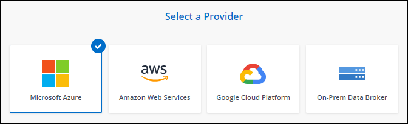
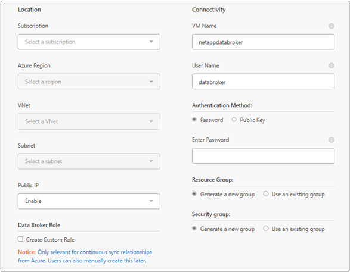

リリースノート
リリースノート
Azure に新しいデータブローカーを作成
 変更を提案
変更を提案
新しいデータブローカーグループを作成する場合は、 Microsoft Azure を選択して、 VNet 内の新しい仮想マシンにデータブローカーソフトウェアを導入します。BlueXPのコピーと同期の手順に従ってインストールプロセスを実行できますが、インストールの準備に役立つように、このページでは要件と手順を繰り返します。
また、クラウド内または社内の既存の Linux ホストにデータブローカーをインストールすることもできます。 "詳細はこちら。"。
サポートされている Azure リージョン
中国、米国政府、米国国防総省を除くすべての地域がサポートされます。
root権限
データブローカーソフトウェアは、Linuxホストで自動的にルートとして実行されます。データブローカーの処理では、rootとして実行する必要があります。たとえば、共有をマウントするには、のように指定します
ネットワーク要件
-
データブローカーは、BlueXPのコピーと同期サービスにポーリングしてポート443経由のタスクを実行できるように、アウトバウンドインターネット接続を必要とします。
BlueXPのコピーと同期でAzureにデータブローカーを導入すると、必要なアウトバウンド通信を可能にするセキュリティグループが作成されます。
アウトバウンド接続を制限する必要がある場合は、を参照してください "データブローカーが連絡するエンドポイントのリスト"。
-
ネットワークタイムプロトコル（ NTP ）サービスを使用するように、ソース、ターゲット、およびデータブローカーを設定することを推奨します。3 つのコンポーネント間の時間差は 5 分を超えないようにしてください。
Azureにデータブローカーを導入するための権限が必要です
データブローカーの導入に使用するAzureユーザアカウントに、次の権限があることを確認してください。
{
"Name": "Azure Data Broker",
"Actions": [
"Microsoft.Resources/subscriptions/read",
"Microsoft.Resources/deployments/operationstatuses/read",
"Microsoft.Resources/subscriptions/locations/read",
"Microsoft.Network/networkInterfaces/read",
"Microsoft.Network/virtualNetworks/subnets/read",
"Microsoft.Resources/subscriptions/resourceGroups/write",
"Microsoft.Resources/subscriptions/resourceGroups/delete",
"Microsoft.Resources/deployments/write",
"Microsoft.Resources/deployments/validate/action",
"Microsoft.Resources/deployments/operationStatuses/read",
"Microsoft.Resources/deployments/cancel/action",
"Microsoft.Compute/virtualMachines/read",
"Microsoft.Compute/virtualMachines/delete",
"Microsoft.Compute/disks/delete",
"Microsoft.Network/networkInterfaces/delete",
"Microsoft.Network/publicIPAddresses/delete",
"Microsoft.Network/networkSecurityGroups/securityRules/delete",
"Microsoft.Resources/subscriptions/resourceGroups/write",
"Microsoft.Compute/virtualMachines/delete",
"Microsoft.Network/networkSecurityGroups/write",
"Microsoft.Network/networkSecurityGroups/join/action",
"Microsoft.Compute/disks/write",
"Microsoft.Network/networkInterfaces/write",
"Microsoft.Network/virtualNetworks/read",
"Microsoft.Network/publicIPAddresses/write",
"Microsoft.Compute/virtualMachines/write",
"Microsoft.Compute/virtualMachines/extensions/write",
"Microsoft.Resources/deployments/read",
"Microsoft.Network/networkSecurityGroups/read",
"Microsoft.Network/publicIPAddresses/read",
"Microsoft.Network/virtualNetworks/subnets/join/action",
"Microsoft.Network/publicIPAddresses/join/action",
"Microsoft.Network/networkInterfaces/join/action",
"Microsoft.Storage/storageAccounts/read",
"Microsoft.EventGrid/systemTopics/eventSubscriptions/write",
"Microsoft.EventGrid/systemTopics/eventSubscriptions/read",
"Microsoft.EventGrid/systemTopics/eventSubscriptions/delete",
"Microsoft.EventGrid/systemTopics/eventSubscriptions/getFullUrl/action",
"Microsoft.EventGrid/systemTopics/eventSubscriptions/getDeliveryAttributes/action",
"Microsoft.EventGrid/systemTopics/read",
"Microsoft.EventGrid/systemTopics/write",
"Microsoft.EventGrid/systemTopics/delete",
"Microsoft.EventGrid/eventSubscriptions/write",
"Microsoft.Storage/storageAccounts/write"
"Microsoft.MarketplaceOrdering/offertypes/publishers/offers/plans/agreements/read"
"Microsoft.MarketplaceOrdering/offertypes/publishers/offers/plans/agreements/write"
"Microsoft.Network/networkSecurityGroups/securityRules/read",
"Microsoft.Network/networkSecurityGroups/read", ],
"NotActions": [],
"AssignableScopes": [],
"Description": "Azure Data Broker",
"IsCustom": "true"
}
注：
-
次の権限は、 "連続同期設定" Azureから別のクラウドストレージの場所への同期関係で次の手順を実行します。
-
'microsoft.StorageAccounts/read'、
-
'microsoft.EventGrid/systemTopics/eventSubscriptions/write'、
-
'microsoft.EventGrid/systemTopics/eventSubscriptions/read'、
-
'microsoft.EventGrid/systemTopics/eventSubscripts/delete'、
-
'microsoft.EventGrid/systemTopics/eventSubscripts/getFullUrl/action'、
-
'microsoft.EventGrid/systemTopics/eventSubscripts/getDeliveryAttributes/action'、
-
'microsoft.EventGrid/systemTopics/read'、
-
'microsoft.EventGrid/systemTopics/write'、
-
'microsoft.EventGrid/systemTopics/delete'、
-
'microsoft.EventGrid/eventSubscriptions/write'、
-
'microsoft.StorageAccounts/write'
また、AzureにContinuous Syncを実装する場合は、割り当て可能な範囲をサブスクリプションの範囲に設定し、*リソースグループの範囲ではない*に設定する必要があります。
-
-
次の権限は、データブローカーの作成に独自のセキュリティを選択する場合にのみ必要です。
-
Microsoft.Network/networkSecurityGroups/securityRules/read"
-
Microsoft.Network/networkSecurityGroups/read"
-
認証方式
データブローカーを導入する場合、仮想マシンの認証方式として、パスワードまたはSSH公開鍵ペアを選択する必要があります。
キー・ペアの作成方法については、を参照してください "Azure のドキュメント：「 Create and use an SSH public-private key pair for Linux VMs in Azure"。
データブローカーの作成
新しいデータブローカーを作成する方法はいくつかあります。以下の手順では、同期関係を作成する際にデータブローカーを Azure にインストールする方法について説明します。
-
[新しい同期の作成]*を選択します。
-
[同期関係の定義]ページで、ソースとターゲットを選択し、*[続行]*を選択します。
「 * データブローカーグループ * 」ページが表示されるまで、手順を完了します。
-
[データブローカーグループ]ページで、[データブローカーの作成]*を選択し、[Microsoft Azure]*を選択します。

-
データブローカーの名前を入力し、*[続行]*を選択します。
-
プロンプトが表示されたら、 Microsoft アカウントにログインします。プロンプトが表示されない場合は、* Azureにログイン*を選択します。
このフォームは、 Microsoft が所有およびホストしています。クレデンシャルがネットアップに提供されていません。
-
データブローカーの場所を選択し、仮想マシンに関する基本的な詳細を入力します。


Continuous Sync関係を実装する場合は、データブローカーにカスタムロールを割り当てる必要があります。これは、ブローカーの作成後に手動で行うこともできます。 -
VNet でのインターネットアクセスにプロキシが必要な場合は、プロキシ設定を指定します。
-
「 * Continue * 」を選択します。データブローカーにS3権限を追加する場合は、AWSのアクセスキーとシークレットキーを入力します。
-
[続行]*を選択し、展開が完了するまでページを開いたままにします。
この処理には最大 7 分かかることがあります。
-
BlueXPのコピーと同期で、データブローカーが利用可能になったら*[続行]*を選択します。
-
ウィザードのページに入力して、新しい同期関係を作成します。
Azure にデータブローカーを導入し、新しい同期関係を作成しました。このデータブローカーは、追加の同期関係とともに使用できます。
データブローカー VM の詳細
BlueXPのコピーと同期では、Azureで次の構成を使用してデータブローカーが作成されます。
- Node.jsとの互換性
-
v21.2.0
- VM タイプ
-
標準 DS4 v2
- vCPU
-
8.
- RAM
-
28 GB
- オペレーティングシステム
-
Rocky Linux 9.0
- ディスクのサイズとタイプ
-
64 GB Premium SSD